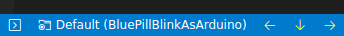
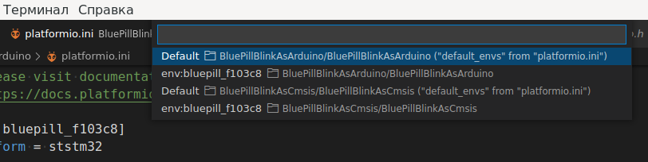

Не все новички сразу догадываются о том, как переключаться в PlatformIO между проектами. Например, если открыто два проекта, то появляется вопрос: как переключиться на другой проект, чтобы его собрать и запустить на плате?
Переключение между проектами делается следующим образом. Вначале на нижней синей панели надо нажать кнопку Default:

Затем в верхней части окна VS Code выбрать стрелками вверх/вниз нужный проект:

Выбирать следует строки, в которых вначале написано "Default".
После такого выбора нужный проект становится текущим, а компиляция, запуск и отладка происходит именно для выбранного таким образом проекта.